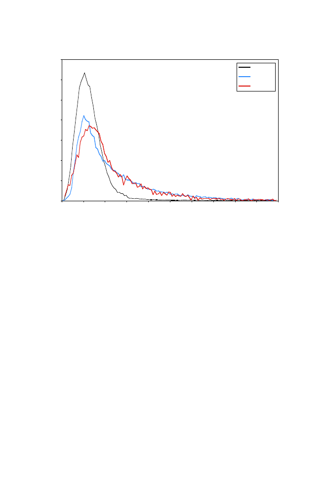

438
14 Comparative Genomics
0
1
2
3
4
5
6
7
0
100
200
300
400
500
600
700
800
900 1 000
Exon length (bp)
Percentage of exons
Human
Worm
Fly
Fig. 14.14.
[This figure also appears in the color insert.] Distributions of exon
lengths in
H. sapiens
,
C. elegans
, and
D. melanogaster
. Only a small proportion of
human exons exceed 300 bp in length, indicating that such a threshold might be used
as an additional probabilistic criterion for exon scoring. Reprinted, with permission,
from International Human Genome Sequencing Consortium (2001)
Nature
409:860–
921. Copyright 2001 Nature Publishing Group.
absence of significant database matches for substantial fractions of predicted
genes (30–40% for early sequencing projects).
Comparative genomics provides an additional approach to gene finding
(coding sequences
and
regulatory sequences) that employs several related
genomes to reduce the signal-to-noise ratio. After applying gene-finding meth-
ods to the genomic sequence of any single organism, we usually do not know
whether all exons have been correctly identified, nor do we know what tran-
scription factors regulate the expression of that gene. Now suppose that the
corresponding genomic sequences from other related organisms are known. We
perform multiple alignment on their corresponding regions. Since the gene and
its regulatory sequences have been evolutionarily selected for function, we ex-
pect to find a higher level of sequence conservation within the coding and
regulatory sequences than in the introns or “spacer” regions between tran-
scription factor binding sites.
This concept is diagrammed in Fig. 14.15. After multiple sequence align-
ment, correct translational start sites, stop sites, and exon boundaries can
be inferred from the “consensus” assignment for the whole set. Regulatory
sequences are particularly difficult to identify from a single genome because